Section 3.2 Double Integrals in Polar Coordinates
So far, in setting up integrals, we have always cut up the domain of integration into tiny rectangles by drawing in many lines of constant \(x\) and many lines of constant \(y\text{.}\)
There is no law that says that we must cut up our domains of integration into tiny pieces in that way. Indeed, when the objects of interest are sort of round and centered on the origin, it is often advantageous 1 to use polar coordinates, rather than Cartesian coordinates.
Subsection 3.2.1 Polar Coordinates
It may have been a while since you did anything in polar coordinates. So let's review before we resume integrating.
Definition 3.2.1.
The polar coordinates 2 of any point \((x,y)\) in the \(xy\)-plane are

Cartesian and polar coordinates are related, via a quick bit of trigonometry, by
Equation 3.2.2.
The following two figures show a number of lines of constant \(\theta\text{,}\) on the left, and curves of constant \(r\text{,}\) on the right.
Note that the polar angle \(\theta\) is only defined up to integer multiples of \(2\pi\text{.}\) For example, the point \((1,0)\) on the \(x\)-axis could have \(\theta=0\text{,}\) but could also have \(\theta=2\pi\) or \(\theta=4\pi\text{.}\) It is sometimes convenient to assign \(\theta\) negative values. When \(\theta \lt 0\text{,}\) the counter-clockwise 3 angle \(\theta\) refers to the clockwise angle \(|\theta|\text{.}\) For example, the point \((0,-1)\) on the negative \(y\)-axis can have \(\theta=-\frac{\pi}{2}\) and can also have \(\theta=\frac{3\pi}{2}\text{.}\)
It is also sometimes convenient to extend the above definitions by saying that \(x=r\cos\theta\) and \(y=r\sin\theta\) even when \(r\) is negative. For example, the following figure shows \((x,y)\) for \(r=1\text{,}\) \(\theta=\frac{\pi}{4}\) and for \(r=-1\text{,}\) \(\theta=\frac{\pi}{4}\text{.}\)
Both points lie on the line through the origin that makes an angle of \(45^\circ\) with the \(x\)-axis and both are a distance one from the origin. But they are on opposite sides of the the origin.
Subsection 3.2.2 Polar Curves
Here are a couple of examples in which we sketch curves specified by equations in terms of polar coordinates.
Example 3.2.3. The Cardioid.
Let's sketch the curve
Our starting point will be to understand how \(1+\cos\theta\) varies with \(\theta\text{.}\) So it will be helpful to remember what the graph of \(\cos\theta\) looks like for \(0\le\theta\le 2\pi\text{.}\)
From this we see that the graph of \(y=1+\cos\theta\) is
Now let's pick some easy \(\theta\) values, find the corresponding \(r\)'s and sketch them.
- When \(\theta=0\text{,}\) we have \(r=1+\cos 0 = 1+1=2\text{.}\) To sketch the point with \(\theta=0\) and \(r=2\text{,}\) we first draw in the half-line consisting of all points with \(\theta=0\text{,}\) \(r \gt 0\text{.}\) That's the positive \(x\)-axis, sketched in gray in the leftmost figure below. Then we put in a dot on that line a distance \(2\) from the origin. That's the red dot in the first figure below.
-
Now increase \(\theta\) a bit (to another easy place to evaluate), say to \(\theta=\frac{\pi}{6}\text{.}\) As we do so \(r=1+\cos\theta\) decreases to \(r=1+\cos\frac{\pi}{6} = 1+\frac{\sqrt{3}}{2}\approx 1.87\text{.}\) To sketch the point with \(\theta=\frac{\pi}{6}\) and \(r\approx 1.87\text{,}\) we first draw in the half-line consisting of all points with \(\theta=\frac{\pi}{6}\text{,}\) \(r \gt 0\text{.}\) That's the upper gray line in the second figure below. Then we put in a dot on that line a distance \(1.87\) from the origin. That's the upper red dot in the second figure below.
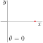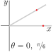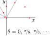 -
Now increase \(\theta\) still more, say to
- \(\theta=\frac{2\pi}{6}=\frac{\pi}{3}\text{,}\)
- followed by \(\theta=\frac{3\pi}{6}=\frac{\pi}{2}\text{,}\)
- followed by \(\theta=\frac{4\pi}{6}=\frac{2\pi}{3}\text{,}\)
- followed by \(\theta=\frac{5\pi}{6}\text{,}\)
- followed by \(\theta=\frac{6\pi}{6}=\pi\text{.}\)
As \(\theta\) increases, \(r=1+\cos\theta\) decreases, hitting \(r=1\) when \(\theta=\frac{\pi}{2}\) and ending at \(r=0\) when \(\theta=\pi\text{.}\) For each of these \(\theta\)'s, we first draw in the half-line consisting of all points with that \(\theta\) and \(r\ge 0\text{.}\) Those are the five gray lines in the figure on the right above. Then we put in a dot on each \(\theta\)-line a distance \(r=1+\cos\theta\) from the origin. Those are the red dots on the gray lines in the figure on the right above.
-
We could continue the above procedure for \(\pi\le\theta\le 2\pi\text{.}\) Or we can look at the graph of \(\cos\theta\) above and notice that the graph of \(\cos\theta\) for \(\pi\le\theta\le 2\pi\) is exactly the mirror image, about \(\theta=\pi\text{,}\) of the graph of \(\cos\theta\) for \(0\le\theta\le \pi\text{.}\)
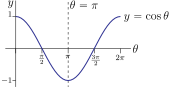That is, \(\cos(\pi+\theta) =\cos(\pi-\theta)\) so that \(r(\pi+\theta) = r(\pi-\theta)\text{.}\) So we get the figure.
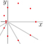 -
Finally, we fill in a smooth curve through the dots and we get the graph below. This curve is called a cardioid because it looks like a heart 4 .
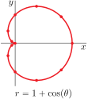
Example 3.2.4. The Three Petal Rose.
Now we'll use the same procedure as in the last example to sketch the graph of
Again it will be useful to remember what the graph of \(\sin(3\theta)\) looks like for \(0\le\theta\le 2\pi\text{.}\)
-
We'll first consider \(0\le\theta\le\frac{\pi}{3}\text{,}\) so that \(0\le 3\theta \le \pi\text{.}\) On this interval \(r(\theta)=\sin(3\theta)\)
- starts with \(r(0)=0\text{,}\) and then
- increases as \(\theta\) increases until
- \(3\theta=\frac{\pi}{2}\text{,}\) i.e. \(\theta=\frac{\pi}{6}\text{,}\) where \(r\big(\frac{\pi}{6}\big)=1\text{,}\) and then
- decreases as \(\theta\) increases until
- \(3\theta=\pi\text{,}\) i.e. \(\theta=\frac{\pi}{3}\text{,}\) where \(r\big(\frac{\pi}{3}\big)=0\text{,}\) again.
Here is a table giving a few values of \(r(\theta)\) for \(0\le \theta\le\frac{\pi}{3}\text{.}\) Notice that we have chosen values of \(\theta\) for which \(\sin(3\theta)\) is easy to compute.
\(\theta\) \(3\theta\) \(r(\theta)\) 0 0 0 \(\frac{\pi}{12}\) \(\frac{\pi}{4}\) \(\frac{1}{\sqrt{2}}\approx 0.71\) \(\frac{2 \pi}{12}\) \(\frac{\pi}{2}\) \(1\) \(\frac{3 \pi}{12}\) \(\frac{3\pi}{4}\) \(\frac{1}{\sqrt{2}}\approx 0.71\) \(\frac{4 \pi}{12}\) \(\pi\) \(0\) and here is a sketch exhibiting those values and another sketch of the part of the curve with \(0\le \theta\le\frac{\pi}{3}\text{.}\)
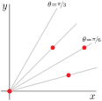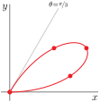 -
Next consider \(\frac{\pi}{3}\le\theta\le\frac{2\pi}{3}\text{,}\) so that \(\pi\le 3\theta \le 2\pi\text{.}\) On this interval \(r(\theta)=\sin(3\theta)\)
- starts with \(r\big(\frac{\pi}{3}\big)=0\text{,}\) and then
- decreases as \(\theta\) increases until
- \(3\theta=\frac{3\pi}{2}\text{,}\) i.e. \(\theta=\frac{\pi}{2}\text{,}\) where \(r\big(\frac{\pi}{2}\big)=-1\text{,}\) and then
- increases as \(\theta\) increases until
- \(3\theta=2\pi\text{,}\) i.e. \(\theta=\frac{2\pi}{3}\text{,}\) where \(r\big(\frac{2\pi}{3}\big)=0\text{,}\) again.
We are now encountering, for the first time, \(r(\theta)\)'s that are negative. The figure on the left below contains, for each of \(\theta = \frac{4\pi}{12}=\frac{\pi}{3}\text{,}\) \(\frac{5\pi}{12}\text{,}\) \(\ \frac{6\pi}{12}=\frac{\pi}{2}\text{,}\) \(\ \frac{7\pi}{12}\) and \(\ \frac{8\pi}{12}=\frac{2\pi}{3}\)
- the (dashed) half-line consisting of all points with that \(\theta\) and \(r \lt 0\) and
- the dot with that \(\theta\) and \(r(\theta)=\sin(3\theta)\text{.}\)
The figure on the right below provides a sketch of the part of the curve \(r=\sin(3\theta)\) with \(\frac{\pi}{3}\le \theta\le \frac{2\pi}{3}\text{.}\)
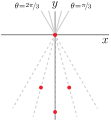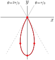 -
Finally consider \(\frac{2\pi}{3}\le\theta\le\pi\) (because \(r(\theta+\pi) = \sin (3\theta+3\pi) = -\sin(3\theta)=-r(\theta)\text{,}\) the part of the curve with \(\pi\le\theta\le 2\pi\) just retraces the part with \(0\le\theta\le \pi\)), so that \(2\pi\le 3\theta \le 3\pi\text{.}\) On this interval \(r(\theta)=\sin(3\theta)\)
- starts with \(r\big(\frac{2\pi}{3}\big)=0\text{,}\) and then
- increases as \(\theta\) increases until
- \(3\theta=\frac{5\pi}{2}\text{,}\) i.e. \(\theta=\frac{10\pi}{12}\text{,}\) where \(r\big(\frac{5\pi}{2}\big)=1\text{,}\) and then
- decreases as \(\theta\) increases until
- \(3\theta=3\pi\text{,}\) i.e. \(\theta=\frac{12\pi}{12}=\pi\text{,}\) where \(r\big(\pi\big)=0\text{,}\) again.
The figure on the left below contains, for each of \(\theta = \frac{8\pi}{12}=\frac{2\pi}{3}\text{,}\) \(\frac{9\pi}{12}\text{,}\) \(\ \frac{10\pi}{12}\text{,}\) \(\ \frac{11\pi}{12}\) and \(\ \frac{12\pi}{12}=\pi\)
- the (solid) half-line consisting of all points with that \(\theta\) and \(r\ge 0\) and
- the dot with that \(\theta\) and \(r(\theta)=\sin(3\theta)\text{.}\)
The figure on the right below provides a sketch of the part of the curve \(r=\sin(3\theta)\) with \(\frac{2\pi}{3}\le \theta\le \pi\text{.}\)
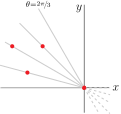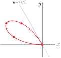
Putting the three lobes together gives the full curve, which is called the “three petal rose”.
There is an infinite family of similar rose curves (also called rhodonea 5 curves).
Subsection 3.2.3 Integrals in Polar Coordinates
We now return to the problem of using polar coordinates to set up double integrals. So far, we have used Cartesian coordinates, in the sense that we have cut up our domains of integration into tiny rectangles (on which the integrand is essentially constant) by drawing in many lines of constant \(x\) and many lines of constant \(y\text{.}\) To use polar coordinates, we instead draw in both lines of constant \(\theta\) and curves of constant \(r\text{.}\) This cuts the \(xy\)-plane up into approximate rectangles.
Here is an enlarged sketch of one such approximate rectangle.
One side has length \(\dee{r}\text{,}\) the spacing between the curves of constant \(r\text{.}\) The other side is a portion of a circle of radius \(r\) that subtends, at the origin, an angle \(\dee{\theta}\text{,}\) the angle between the lines of constant \(\theta\text{.}\) As the circumference of the full circle is \(2\pi r\) and as \(\dee{\theta}\) is the fraction \(\frac{\dee{\theta}}{2\pi}\) of a full circle 6 , the other side of the approximate rectangle has length \(\frac{\dee{\theta}}{2\pi}2\pi r = r\dee{\theta}\text{.}\) So the shaded region has area approximately
Equation 3.2.5.
By way of comparison, using Cartesian coordinates we had \(\dee{A} =\dee{x}\,\dee{y}\text{.}\)
This intuitive computation has been somewhat handwavy 7 . But using it in the usual integral setup procedure, in which we choose \(\dee{r}\) and \(\dee{\theta}\) to be constants times \(\frac{1}{n}\) and then take the limit \(n\rightarrow 0\text{,}\) gives, in the limit, error exactly zero. A sample argument, in which we see the error going to zero in the limit \(n\rightarrow\infty\text{,}\) is provided in the (optional) section §3.2.4.
Example 3.2.6. Mass.
Let \(0\le a \lt b\le 2\pi\) be constants and let \(\cR\) be the region
where the functions \(T(\theta)\) and \(B(\theta)\) are continuous and obey \(B(\theta)\le T(\theta)\) for all \(a\le\theta\le b\text{.}\) Find the mass of \(\cR\) if it has density \(f(x,y)\text{.}\)
The figure on the left below is a sketch of \(\cR\text{.}\) Notice that \(r=T(\theta)\) is the outer curve while \(r=B(\theta)\) is the inner curve.
Divide \(\cR\) into wedges (as in wedges of pie 8 or wedges of cheese) by drawing in many lines of constant \(\theta\text{,}\) with the various values of \(\theta\) differing by a tiny amount \(\dee{\theta}\text{.}\) The figure on the right above shows one such wedge, outlined in blue.
Concentrate on any one wedge. Subdivide the wedge further into approximate rectangles by drawing in many circles of constant \(r\text{,}\) with the various values of \(r\) differing by a tiny amount \(\dee{r}\text{.}\) The figure below shows one such approximate rectangle, in black.
Now concentrate on one such rectangle. Let's say that it contains the point with polar coordinates \(r\) and \(\theta\text{.}\) As we saw in 3.2.5 above,
- the area of that rectangle is essentially \(\dee{A} = r\,\dee{r}\,\dee{\theta}\text{.}\)
- As the mass density on the rectangle is essentially \(f\big(r\cos\theta\,,\,r\sin\theta\big)\text{,}\) the mass of the rectangle is essentially \(f\big(r\cos\theta\,,\,r\sin\theta\big)\,r\,\dee{r}\,\dee{\theta}\text{.}\)
- To get the mass of any one wedge, say the wedge whose polar angle runs from \(\theta\) to \(\theta+\dee{\theta}\text{,}\) we just add up the masses of the approximate rectangles in that wedge, by integrating \(r\) from its smallest value on the wedge, namely \(B(\theta)\text{,}\) to its largest value on the wedge, namely \(T(\theta)\text{.}\) The mass of the wedge is thus\begin{equation*} \dee{\theta} \int_{B(\theta)}^{T(\theta)} \dee{r}\,r\, f\big(r\cos\theta\,,\,r\sin\theta\big) \end{equation*}
- Finally, to get the mass of \(\cR\text{,}\) we just add up the masses of all of the different wedges, by integrating \(\theta\) from its smallest value on \(\cR\text{,}\) namely \(a\text{,}\) to its largest value on \(\cR\text{,}\) namely \(b\text{.}\)
In conclusion,
We have repeatedly used the word “essentially” above to avoid getting into the nitty-gritty details required to prove things rigorously. The mathematically correct proof of 3.2.7 follows the same intuition, but requires some more careful error bounds, as in the optional §3.2.4 below.
In the last example, we derived the important formula that the mass of the region
with mass density \(f(x,y)\) is
Equation 3.2.7.
We can immediately adapt that example to calculate areas and derive the formula that the area of the region
is
Equation 3.2.8.
We just have set the density to \(1\text{.}\) We do so in the next example.
Example 3.2.9. Polar Area.
Let \(0\le a \lt b\le 2\pi\) be constants. Find the area of the region
where the function \(R(\theta)\ge 0\) is continuous.
To get the area of \(\cR\) we just need to assign it a density one and find the resulting mass. So, by 3.2.7, with \(f(x,y)=1\text{,}\) \(B(\theta)=0\) and \(T(\theta)=R(\theta)\text{,}\)
In this case we can easily do the inner \(r\) integral, giving
The expression \(\frac{1}{2} R(\theta)^2\ \dee{\theta}\) in 3.2.8 has a geometric interpretation. It is just the area of a wedge of a circular disk of radius \(R(\theta)\) (with \(R(\theta)\) treated as a constant) that subtends the angle \(\dee{\theta}\text{.}\)
To see this, note that area of the wedge is the fraction \(\frac{\dee{\theta}}{2\pi}\) of the area of the entire disk, which is \(\pi R(\theta)^2\text{.}\) So 3.2.8 just says that the area of \(\cR\) can be computed by cutting \(\cR\) up into tiny wedges and adding up the areas of all of the tiny wedges.
Example 3.2.10. Polar Area.
Find the area of one petal of the three petal rose \(r=\sin(3\theta)\text{.}\)
Looking at the last figure in Example 3.2.4, we see that we want the area of
So, by 3.2.8 with \(a=0\text{,}\) \(b=\frac{\pi}{3}\text{,}\) and \(R(\theta) =\sin(3\theta)\text{,}\)
In the first step we used the double angle formula \(\cos(2\phi) = 1-2\sin^2(\phi)\text{.}\) Unsurprisingly, trig identities show up a lot when polar coordinates are used.
Example 3.2.11. Volumes Using Polar Coordinates.
A cylindrical hole of radius \(b\) is drilled symmetrically (i.e. along a diameter) through a metal sphere of radius \(a\ge b\text{.}\) Find the volume of metal removed.
Let's use a coordinate system with the sphere centred on \((0,0,0)\) and with the centre of the drill hole following the \(z\)-axis. In particular, the sphere is \(x^2+y^2+z^2\le a^2\text{.}\)
Here is a sketch of the part of the sphere in the first octant. The hole in the sphere made by the drill is outlined in red. By symmetry the total amount of metal removed will be eight times the amount from the first octant.
That is, the volume of metal removed will be eight times the volume of the solid
where the base region
In polar coordinates
We follow our standard divide and sum up strategy. We will cut the base region \(\cR_1\) into small pieces and sum up the volumes that lie above each small piece.
-
Divide \(\cR_1\) into wedges by drawing in many lines of constant \(\theta\text{,}\) with the various values of \(\theta\) differing by a tiny amount \(\dee{\theta}\text{.}\) The figure on the left below shows one such wedge, outlined in blue.
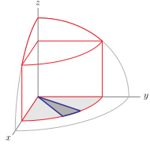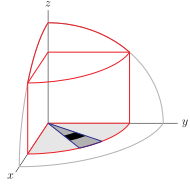 - Concentrate on any one wedge. Subdivide the wedge further into approximate rectangles by drawing in many circles of constant \(r\text{,}\) with the various values of \(r\) differing by a tiny amount \(\dee{r}\text{.}\) The figure on the right above shows one such approximate rectangle, in black.
-
Concentrate on one such rectangle. Let's say that it contains the point with polar coordinates \(r\) and \(\theta\text{.}\) As we saw in 3.2.5 above,
- the area of that rectangle is essentially \(\dee{A} = r\,\dee{r}\,\dee{\theta}\text{.}\)
-
The part of \(\cV_1\) that is above that rectangle is like an office tower whose height is essentially \(\sqrt{a^2-r^2}\text{,}\) and whose base has area \(\dee{A} = r\,\dee{r}\,\dee{\theta}\text{.}\) It is outlined in black in the figure below. So the volume of the part of \(\cV_1 \) that is above the rectangle is essentially \(\sqrt{a^2-r^2}\,r\,\dee{r}\,\dee{\theta}\text{.}\)
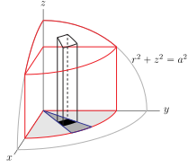
-
To get the volume of the part of \(\cV_1\) above any one wedge (outlined in blue in the figure below), say the wedge whose polar angle runs from \(\theta\) to \(\theta+\dee{\theta}\text{,}\) we just add up the volumes above the approximate rectangles in that wedge, by integrating \(r\) from its smallest value on the wedge, namely \(0\text{,}\) to its largest value on the wedge, namely \(b\text{.}\) The volume above the wedge is thus
\begin{align*} \dee{\theta} \int_0^b \dee{r}\,r\, \sqrt{a^2-r^2} &= \dee{\theta} \int_{a^2}^{a^2-b^2} \frac{\dee{u}}{-2}\, \sqrt{u}\\ &\hskip0.5in \text{where } u= a^2-r^2,\ \dee{u} =-2r\,\dee{r}\\ &= \dee{\theta}\left[\frac{u^{3/2}}{-3}\right]_{a^2}^{a^2-b^2}\\ &= \frac{1}{3}\dee{\theta}\left[a^3-{\big(a^2-b^2\big)}^{3/2}\right] \end{align*}Notice that this quantity is independent of \(\theta\text{.}\) If you think about this for a moment, you can see that this is a consequence of the fact that our solid is invariant under rotations about the \(z\)-axis.
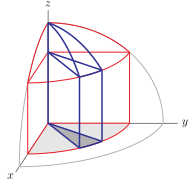 - Finally, to get the volume of \(\cV_1\text{,}\) we just add up the volumes over all of the different wedges, by integrating \(\theta\) from its smallest value on \(\cR_1\text{,}\) namely \(0\text{,}\) to its largest value on \(\cR_1\text{,}\) namely \(\frac{\pi}{2}\text{.}\)\begin{align*} \text{Volume}(\cV_1) &=\frac{1}{3}\int_0^{\pi/2}\dee{\theta} \left[a^3-{\big(a^2-b^2\big)}^{3/2}\right]\\ &=\frac{\pi}{6}\left[a^3-{\big(a^2-b^2\big)}^{3/2}\right] \end{align*}
- In conclusion, the total volume of metal removed is\begin{align*} \text{Volume}(\cV) &=8\,\text{Volume}(\cV_1)\\ &=\frac{4\pi}{3}\left[a^3-{\big(a^2-b^2\big)}^{3/2}\right] \end{align*}
Note that we can easily apply a couple of sanity checks to our answer.
- If the radius of the drill bit \(b=0\text{,}\) no metal is removed at all. So the total volume removed should be zero. Our answer does indeed give \(0\) in this case.
- If the radius of the drill bit \(b=a\text{,}\) the radius of the sphere, then the entire sphere disappears. So the total volume removed should be the volume of a sphere of radius \(a\text{.}\) Our answer does indeed give \(\frac{4}{3}\pi a^3\) in this case.
- If the radius, \(a\text{,}\) of the sphere and the radius, \(b\text{,}\) of the drill bit are measured in units of meters, then the remaining volume \(\frac{4\pi}{3}\left[a^3-{\big(a^2-b^2\big)}^{3/2}\right]\text{,}\) has units \(\text{meters}^3\text{,}\) as it should.
The previous two problems were given to us (or nearly given to us) in polar coordinates. We'll now get a little practice converting integrals into polar coordinates, and recognising when it is helpful to do so.
Example 3.2.12. Changing to Polar Coordinates.
Convert the integral \(\int_0^1\int_0^x y\sqrt{x^2+y^2}\ \dee{y}\,\dee{x}\) to polar coordinates and evaluate the result.
First recall that in polar coordinates \(x=r\cos\theta\text{,}\) \(y=r\sin\theta\) and \(\dee{x}\,\dee{y}=\dee{A}=r\,\dee{r}\,\dee{\theta}\) so that the integrand (and \(\dee{A}\))
is very simple. So whether or not this integral will be easy to evaluate using polar coordinates will be largely determined by the domain of integration.
So our main task is to sketch the domain of integration. To prepare for the sketch, note that in the integral
- the variable \(x\) runs from \(0\) to \(1\) and
- for each fixed \(0\le x\le 1\text{,}\) \(y\) runs from \(0\) to \(x\text{.}\)
So the domain of integration is
which is sketched in the figure on the left below. It is a right angled triangle.
Next we express the domain of integration in terms of polar coordinates, by expressing the equations of each of the boundary lines in terms of polar coordinates.
- The \(x\)-axis, i.e. \(y=r\sin\theta=0\text{,}\) is \(\theta=0\text{.}\)
- The line \(x=1\) is \(r\cos\theta=1\) or \(r=\frac{1}{\cos\theta}\text{.}\)
- Finally, (in the first quadrant) the line\begin{gather*} y=x \iff r\sin\theta = r\cos\theta \iff \tan\theta=\frac{\sin\theta}{\cos\theta}=1 \iff \theta=\frac{\pi}{4} \end{gather*}
So, in polar coordinates, we can write the domain of integration as
We can now slice up \(\cR\) using polar coordinates.
-
Divide \(\cR\) into wedges by drawing in many lines of constant \(\theta\text{,}\) with the various values of \(\theta\) differing by a tiny amount \(\dee{\theta}\text{.}\) The figure on the right above shows one such wedge.
- The first wedge has \(\theta=0\text{.}\)
- The last wedge has \(\theta=\frac{\pi}{4}\text{.}\)
-
Concentrate on any one wedge. Subdivide the wedge further into approximate rectangles by drawing in many circles of constant \(r\text{,}\) with the various values of \(r\) differing by a tiny amount \(\dee{r}\text{.}\) The figure on the right above shows one such approximate rectangle, in black.
- The rectangle that contains the point with polar coordinates \(r\) and \(\theta\) has area (essentially) \(r\,\dee{r}\,\dee{\theta}\text{.}\)
- The first rectangle has \(r=0\text{.}\)
- The last rectangle has \(r=\frac{1}{\cos\theta}\text{.}\)
So our integral is
Because the \(r\)-integral treats \(\theta\) as a constant, we can pull the \(\sin\theta\) out of the inner \(r\)-integral.
Make the substitution
When \(\theta=0\text{,}\) \(u=\cos\theta=1\) and when \(\theta=\frac{\pi}{4}\text{,}\) \(u=\cos\theta=\frac{1}{\sqrt{2}}\text{.}\) So
Example 3.2.13. Changing to Polar Coordinates.
Evaluate \(\displaystyle\int_0^\infty e^{-x^2}\ \dee{x}\text{.}\)
This is actually a trick question. In fact it is a famous trick question 9 .
The integrand \(e^{-x^2}\) does not have an antiderivative that can be expressed in terms of elementary functions 10 . So we cannot evaluate this integral using the usual Calculus II methods. However we can evaluate it's square
precisely because this double integral can be easily evaluated just by changing to polar coordinates! The domain of integration is the first quadrant \(\Set{(x,y)}{x\ge 0,\ y\ge 0}\text{.}\) In polar coordinates, \(\dee{x}\dee{y} = r\,\dee{r}\dee{\theta}\) and the first quadrant is
So
As \(r\) runs all the way to \(+\infty\text{,}\) this is an improper integral, so we should be a little bit careful.
and so we get the famous result
Example 3.2.14.
Find the area of the region that is inside the circle \(r=4\cos\theta\) and to the left of the line \(x=1\text{.}\)
First, let's check that \(r=4\cos\theta\) really is a circle and figure out what circle it is. To do so, we'll convert the equation \(r=4\cos\theta\) into Cartesian coordinates. Multiplying both sides by \(r\) gives
So \(r=4\cos\theta\) is the circle of radius \(2\) centred on \((2,0)\text{.}\) We'll also need the intersection point(s) of \(x=r\cos\theta=1\) and \(r=4\cos\theta\text{.}\) At such an intersection point
Here is a sketch of the region of interest, which we'll call \(\cR\text{.}\)
We could figure out the area of \(\cR\) by using some high school geometry, because \(\cR\) is a circular wedge with a triangle removed. (See Example 3.2.15, below.)
Instead, we'll treat its computation as an exercise in integration using polar coordinates.
As \(\cR\) is symmetric about the \(x\)-axis, the area of \(\cR\) is twice the area of the part that is above the \(x\)-axis. We'll denote by \(\cR_1\) the upper half of \(\cR\text{.}\) Note that we can write the equation \(x=1\) in polar coordinates as \(r=\frac{1}{\cos\theta}\text{.}\) Here is a sketch of \(\cR_1\text{.}\)
Observe that, on \(\cR_1\text{,}\) for any fixed \(\theta\) between \(0\) and \(\frac{\pi}{2}\text{,}\)
- if \(\theta \lt \frac{\pi}{3}\text{,}\) then \(r\) runs from \(0\) to \(\frac{1}{\cos\theta}\text{,}\) while
- if \(\theta \gt \frac{\pi}{3}\text{,}\) then \(r\) runs from \(0\) to \(4\cos\theta\text{.}\)
This naturally leads us to split the domain of integration at \(\theta =\frac{\pi}{3}\text{:}\)
As \(\int r\ \dee{r}=\frac{r^2}{2}+C\text{,}\)
and
Example 3.2.15. Optional — Example 3.2.14 by high school geometry.
We'll now again compute the area of the region \(\cR\) that is inside the circle \(r=4\cos\theta\) and to the left of the line \(x=1\text{.}\) That was the region of interest in Example 3.2.14. This time we'll just use some geometry. Think of \(\cR\) as being the wedge \(\cW\text{,}\) of the figure on the left below, with the triangle \(\cT\text{,}\) of the figure on the right below, removed.
- First we'll get the area of \(\cW\text{.}\) The cosine of the angle between the \(x\) axis and the radius vector from \(C\) to \(A\) is \(\frac{1}{2}\text{.}\) So that angle is \(\frac{\pi}{3}\) and \(\cW\) subtends an angle of \(\frac{2\pi}{3}\text{.}\) The entire circle has area \(\pi 2^2\text{,}\) so that \(\cW\text{,}\) which is the fraction \(\frac{2\pi/3}{2\pi}=\frac{1}{3}\) of the full circle, has area \(\frac{4\pi}{3}\text{.}\)
- Now we'll get the area of the triangle \(\cT\text{.}\) Think of \(\cT\) as having base \(BD\text{.}\) Then the length of the base of \(\cT\) is \(2\sqrt{3}\) and the height of \(\cT\) is \(1\text{.}\) So \(\cT\) has area \(\frac{1}{2}(2\sqrt{3})(1) =\sqrt{3}\text{.}\)
All together
We used some hand waving in deriving the area formula 3.2.8: the word “essentially” appeared quite a few times. Here is how do that derivation more rigorously.
Subsection 3.2.4 Optional— Error Control for the Polar Area Formula>
Let \(0\le a \lt b\le 2\pi\text{.}\) In Examples 3.2.6 and 3.2.9 we derived the formula
for the area of the region
In the course of that derivation we approximated the area of the shaded region in
by \(\dee{A} = r\,\dee{r}\,\dee{\theta}\text{.}\)
We will now justify that approximation, under the assumption that
for all \(a\le \theta\le b\text{.}\) That is, \(R(\theta)\) is bounded and its derivative exists and is bounded too.
Divide the interval \(a\le \theta\le b\) into \(n\) equal subintervals, each of length \(\De\theta=\frac{b-a}{n}\text{.}\) Let \(\theta_i^*\) be the midpoint of the \(i^{\rm th}\) interval. On the \(i^{\rm th}\) interval, \(\theta\) runs from \(\theta_i^*-\frac{1}{2}\De\theta\) to \(\theta_i^*+\frac{1}{2}\De\theta\text{.}\)
By the mean value theorem
for some \(c\) between \(\theta\) and \(\theta_i^*\text{.}\) Because \(|R'(\theta)|\le L\)
This tells us that the difference between \(R(\theta)\) and \(R(\theta_i^*)\) can't be too big compared to \(\big|\theta-\theta_i^*\big|\text{.}\)
On the \(i^{\rm th}\) interval, the radius \(r=R(\theta)\) runs over all values of \(R(\theta)\) with \(\theta\) satisfying \(\big|\theta-\theta_i^*\big|\le\frac{1}{2}\De\theta\text{.}\) By \((*)\text{,}\) all of these values of \(R(\theta)\) lie between \(r_i=R(\theta_i^*)-\frac{1}{2} L\De\theta\) and \(R_i=R(\theta_i^*) +\frac{1}{2} L\De\theta\text{.}\) Consequently the part of \(\cR\) having \(\theta\) in the \(i^{\rm th}\) subinterval, namely,
must contain all of the circular sector
and must be completely contained inside the circular sector
That is, we have found one circular sector that is bigger than the one we are approximating, and one circular sector that is smaller. The area of a circular disk of radius \(\rho\) is \(\pi\rho^2\text{.}\) A circular sector of radius \(\rho\) that subtends an angle \(\De \theta\) is the fraction \(\frac{\De\theta}{2\pi}\) of the full disk and so has the area \(\frac{\De\theta}{2\pi}\pi\rho^2 = \frac{\De\theta}{2}\rho^2\text{.}\)
So the area of \(\cR_i\) must lie between
Observe that
implies that, since \(0\le R(\theta)\le M\text{,}\)
Hence (multiplying by \(\frac{\De\theta}{2}\) to turn them into areas)
and the total area \(A\) obeys the bounds
and
Since \(\De \theta=\frac{b-a}{n}\text{,}\)
Now take the limit as \(n\rightarrow\infty\text{.}\) Since
we have that
exactly, as desired.
Exercises 3.2.5 Exercises
Exercises — Stage 1
1.
Consider the points
For each \(1\le i\le 5\text{,}\)
- sketch, in the \(xy\)-plane, the point \((x_i,y_i)\) and
- find polar coordinates \(r_i\) and \(\theta_i\text{,}\) with \(r_i>0\) and \(0\le\theta_i \lt 2\pi\text{,}\) for the point \((x_i,y_i)\text{.}\)
2.
For each of the following points \((x_i,y_i)\text{,}\)
- find all pairs \((r_i,\theta_i)\) such that \((x_i,y_i) = \big(r_i\cos\theta_i\,,\,r_i\sin\theta_i\big)\text{,}\) and
- in particular, find a pair \((r_i,\theta_i)\) with \(r_i\lt 0\) and \(0\le\theta_i\lt 2\pi\) such that \((x_i,y_i) = \big(r_i\cos\theta_i\,,\,r_i\sin\theta_i\big)\)
- \(\displaystyle (x_1,y_1)=(-2,0) \)
- \(\displaystyle (x_2,y_2)=(1,1) \)
- \(\displaystyle (x_3,y_3)=(-1,-1)\)
- \(\displaystyle (x_4,y_4)=(3,0)\)
- \(\displaystyle (x_5,y_5)=(0,1)\)
3.
Consider the points
Also define, for each angle \(\theta\text{,}\) the vectors
- Determine, for each angle \(\theta\text{,}\) the lengths of the vectors \(\he_r(\theta)\) and \(\he_\theta(\theta)\) and the angle between the vectors \(\he_r(\theta)\) and \(\he_\theta(\theta)\text{.}\) Compute \(\he_r(\theta)\times\he_\theta(\theta)\) (viewing \(\he_r(\theta)\) and \(\he_\theta(\theta)\) as vectors in three dimensions with zero \(\hk\) components).
- For each \(1\le i\le 5\text{,}\) sketch, in the \(xy\)-plane, the point \((x_i,y_i)\) and the vectors \(\he_r(\theta_i)\) and \(\he_\theta(\theta_i)\text{.}\) In your sketch of the vectors, place the tails of the vectors \(\he_r(\theta_i)\) and \(\he_\theta(\theta_i)\) at \((x_i,y_i)\text{.}\)
4.
Let \(\llt a, b\rgt\) be a vector. Let \(r\) be the length of \(\llt a, b\rgt\) and \(\theta\) be the angle between \(\llt a, b\rgt\) and the \(x\)-axis.
- Express \(a\) and \(b\) in terms of \(r\) and \(\theta\text{.}\)
- Let \(\llt A, B\rgt\) be the vector gotten by rotating \(\llt a, b\rgt\) by an angle \(\varphi\) about its tail. Express \(A\) and \(B\) in terms of \(a\text{,}\) \(b\) and \(\varphi\text{.}\)
5.
For each of the regions \(\cR\) sketched below, express \(\dblInt_\cR f(x,y)\,\dee{x}\,\dee{y}\) as an iterated integral in polar coordinates in two different ways.
(a)
(b)
(c)
(d)
6.
Sketch the domain of integration in the \(xy\)-plane for each of the following polar coordinate integrals.
- \(\displaystyle \displaystyle \int_1^2\dee{r} \int_{-\frac{\pi}{4}}^{\frac{\pi}{4}}\dee{\theta} \ r\ f(r\cos\theta,r\sin\theta)\)
- \(\displaystyle \displaystyle \int_0^{\frac{\pi}{4}}\dee{\theta} \int_0^{\frac{2}{\sin\theta+\cos\theta}}\dee{r} \ r\ f(r\cos\theta,r\sin\theta)\)
- \(\displaystyle \displaystyle \int_0^{2\pi}\dee{\theta} \int_0^{\frac{3}{\sqrt{\cos^2\theta+9\sin^2\theta}}}\dee{r} \ r\ f(r\cos\theta,r\sin\theta)\)
Exercises — Stage 2
7.
Use polar coordinates to evaluate each of the following integrals.
- \(\displaystyle\dblInt_S (x+y)\dee{x}\,\dee{y}\) where \(S\) is the region in the first quadrant lying inside the disc \(x^2+y^2\le a^2\) and under the line \(y=\sqrt{3}x\text{.}\)
- \(\displaystyle\dblInt_Sx\ \dee{x}\,\dee{y}\text{,}\) where \(S\) is the disc segment \(x^2+y^2\le 2,\ x\ge 1\text{.}\)
- \(\displaystyle\dblInt_T (x^2+y^2)\dee{x}\,\dee{y}\) where \(T\) is the triangle with vertices \((0,0), (1,0)\) and \((1,1)\text{.}\)
- \(\displaystyle \displaystyle\dblInt_{x^2+y^2\le 1} \ln(x^2+y^2)\,\dee{x}\,\dee{y}\)
8.
Find the volume lying inside the sphere \(x^2+y^2+z^2=2\) and above the paraboloid \(z=x^2+y^2\text{.}\)
9.
Let \(a \gt 0\text{.}\) Find the volume lying inside the cylinder \(x^2+(y-a)^2=a^2\) and between the upper and lower halves of the cone \(z^2=x^2+y^2\text{.}\)
10.
Let \(a \gt 0\text{.}\) Find the volume common to the cylinders \(x^2+y^2\le 2ax\) and \(z^2\le 2ax\text{.}\)
11. ✳.
Consider the region \(E\) in 3--dimensions specified by the inequalities \(x^2 + y^2 \le 2y\) and \(0 \le z \le \sqrt{x^2 + y^2}\text{.}\)
- Draw a reasonably accurate picture of \(E\) in 3--dimensions. Be sure to show the units on the coordinate axes.
Use polar coordinates to find the volume of \(E\text{.}\) Note that you will be “using polar coordinates” if you solve this problem by means of cylindrical coordinates.
12. ✳.
Evaluate the iterated double integral
13. ✳.
- Sketch the region \(\cL\) (in the first quadrant of the \(xy\)--plane) with boundary curves\begin{equation*} x^2 + y^2 = 2,\ x^2 + y^2 = 4,\ y = x,\ y = 0. \end{equation*}The mass of a thin lamina with a density function \(\rho(x,y)\) over the region \(\cL\) is given by\begin{equation*} M =\dblInt_\cL \rho(x,y)\,\dee{A} \end{equation*}
- Find an expression for \(M\) as an integral in polar coordinates.
- Find M when\begin{equation*} \rho(x,y) = \frac{2xy}{x^2+y^2} \end{equation*}
14. ✳.
Evaluate \(\displaystyle \dblInt_{\bbbr^2} \frac{1}{{(1+x^2+y^2)}^2}\ \dee{A}\text{.}\)
15. ✳.
Evaluate the double integral
over the region \(D =\Set{(x,y)}{ x^2+y^2\le 2,\ 0\le y\le x}\text{.}\)
16. ✳.
This question is about the integral
- Sketch the domain of integration.
- Evaluate the integral by transforming to polar coordinates.
17. ✳.
Let \(D\) be the region in the \(xy\)--plane bounded on the left by the line \(x = 2\) and on the right by the circle \(x^2 + y^2 = 16\text{.}\) Evaluate
18. ✳.
In the \(xy\)--plane, the disk \(x^2 + y^2 \le 2x\) is cut into \(2\) pieces by the line \(y = x\text{.}\) Let \(D\) be the larger piece.
- Sketch \(D\) including an accurate description of the center and radius of the given disk. Then describe \(D\) in polar coordinates \((r, \theta)\text{.}\)
- Find the volume of the solid below \(z = \sqrt{x^2 + y^2}\) and above \(D\text{.}\)
19. ✳.
Let \(D\) be the shaded region in the diagram. Find the average distance of points in \(D\) from the origin. You may use that \(\int\cos^n(x)\,dx = \frac{\cos^{n-1}(x)\sin(x)}{n} +\frac{n-1}{n}\int\cos^{n-2}(x)\,dx\) for all natural numbers \(n\ge 2\text{.}\)
Exercises — Stage 3
20. ✳.
Let \(G\) be the region in \(\bbbr^2\) given by
- Sketch the region \(G\text{.}\)
- Express the integral \(\dblInt_G f(x,y)\ \dee{A}\) a sum of iterated integrals \(\dblInt f(x, y)\ \dee{x}\dee{y}\text{.}\)
- Express the integral \(\dblInt_G f(x,y)\ \dee{A}\) as an iterated integral in polar coordinates \((r, \theta)\) where \(x = r \cos(\theta)\) and \(y = r \sin(\theta)\text{.}\)
21. ✳.
Consider
- Sketch the region of integration.
- Reverse the order of integration.
- Evaluate \(J\) by using polar coordinates.
22.
Find the volume of the region in the first octant below the paraboloid
23.
A symmetrical coffee percolator holds 24 cups when full. The interior has a circular cross-section which tapers from a radius of 3' at the centre to 2' at the base and top, which are 12' apart. The bounding surface is parabolic. Where should the mark indicating the 6 cup level be placed?
24. ✳.
Consider the surface \(S\) given by \(z=e^{x^2+y^2}\text{.}\)
- Compute the volume under \(S\) and above the disk \(x^2+y^2\le 9\) in the \(xy\)-plane.
- The volume under \(S\) and above a certain region \(R\) in the \(xy\)-plane is\begin{equation*} \int_0^1\bigg(\int_0^y e^{x^2+y^2}\,\dee{x}\bigg)\dee{y} +\int_1^2\bigg(\int_0^{2-y} e^{x^2+y^2}\,\dee{x}\bigg)\dee{y} \end{equation*}Sketch \(R\) and express the volume as a single iterated integral with the order of integration reversed. Do not compute either integral in part (b).